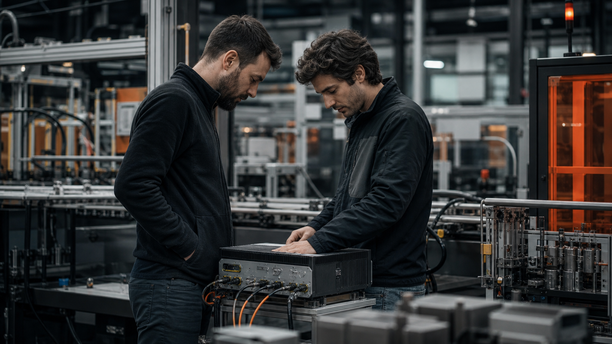
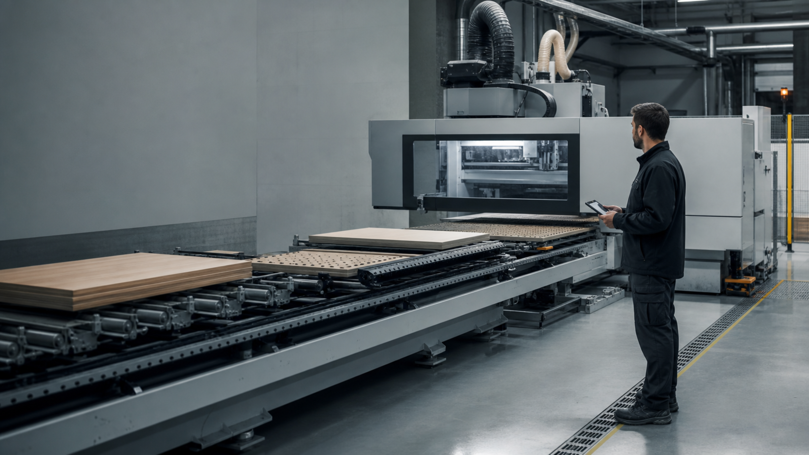

Read the asset.
Voltage · current
Vibration · temperature
OPC UA / MODBUS / CAN
Read-only acquisition
SYSTEM ONE IN MADE OS
Industrial prescriptive intelligence.
From a physical signal to the right action.
TOP 30 FINALIST / SMART MANUFACTURING & LOGISTICS
01 / THE OPERATIONAL GAP
PLC · electrical · vibration
Work orders · interventions
Loads · shifts · delivery windows
THE COST OF ONE UNPLANNED STOP
A local asset failure becomes
a plant-wide financial event.
02 / THE DECISION LAYER
Voltage · current
Vibration · temperature

RevPi Connect 5 / Jetson
Evaluate signals against
work-order history.
What to do.
When to intervene.
Who should approve.
03 / SIGNAL → DECISION → ACTION
Catch the degradation.
Choose the maintenance window.

04 / PRODUCTION EVIDENCE
Observed in a Mexican industrial plant.
Achieved with Made OS before the new model.
Made OS validated in real
production environments.
Prescriptions acted on.
Intelligence that reaches the floor.
05 / BUSINESS MODEL & DISTRIBUTION
One-time deployment
Per production line / month
Of verified avoided-downtime value
Clay AI account research & outbound.
Qualify critical assets and loss exposure.
Agree the baseline and value calculation.
Deploy, prescribe and verify the outcome.
Line → plant → multi-site portfolio.
One recurring decision layer.
06 / THE TEAM & THE ASK
CEMEX × MADE
Let’s deploy commercial pilots across
CEMEX’s manufacturing network.

Industrial designer · repeat founder
MIT TR35 honoree
Mechanical engineering · industrial data
Machine learning, computer vision
and complex operational systems.